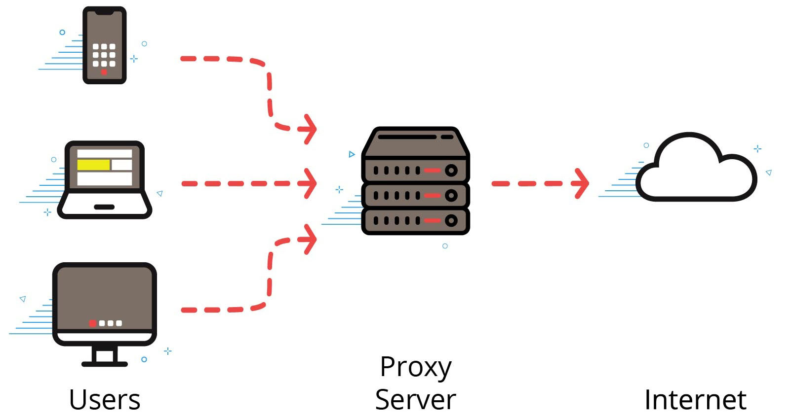

CTEC101 Internet Technologies wk 09
5.2 World Wide Web
The Internet-- The worldwide system of interconnected computers and public networks.
The Web-- Short for World Wide Web. Digital content that is delivered over the Internet, usually through a web browser.
Internet Service Providers (ISP)-- A company that provides individuals and businesses access to the internet and other related services.
IP Address-- A numerical label that is assigned to devices so they can connect and communicate on a network.
Hypertext Transfer Protocol (HTTP)-- A set of rules that govern the transfer of web content between computers.
File Transfer Protocol (FTP)-- A set of rules that govern the transfer of files between computers.
Universal Resource Locator (URL)-- The reference or address to a resource on the Internet. Example: http://www.testout.com/home/about/privacy
Domain Name System (DNS)-- A system and set of rules that associates domain names (such as web servers) with unique IP addresses so users can find and use network resources by an easily readable name instead of by IP address.
Transmission Control Protocol/Internet Protocol (TCP-IP)-- A set of rules that facilitates internet communication.
Hypertext Markup Language (HTML)-- A computer language that web pages use to display content through web browsers.
Intranet-- A private network, usually hidden from the internet and protected by a security device, that uses the same technologies that are used on the internet and may or may not be connected to the internet.
Voice over IP (VoIP)-- A technology that sends voice phone calls using the TCP/IP protocol over digital data lines.
Wi-Fi-- A technology that allows computers, smartphones, and other devices to communicate on a wireless network.
Internet of Things (IoT)-- A computing concept that describes the network of physical devices and everyday devices (including refrigerators, thermostats, streetlights, and environmental tracking systems) that communicate with the internet.
Web Application-- A program or app that uses the internet and a web browser to complete a task. The user's computer interacts with a remote server to access the app.
Blog-- A blog is a website that produces content in forms of blog posts that can contain text, images, video, or other media. Blogs usually have a more casual, conversational style than more mainstream websites.
Wiki-- An online encyclopedia that uses hyperlinks to connect each entry to other relevant entries.
RSS-- A system based on simple text files that are read by a program to provide a stream of updates or feed about a particular topic. RSS originally stood for RDF Site Summary but is also known as "really simple syndication" or "rich-site summary."
Podcast-- An audio program split up into episodes that can be enjoyed on demand. Podcast topics can range from cooking, fashion, music, and about any other topic you can think of.
5.2.1 the Internet
send and receive data on a interconnected group of devices. Internet vs Intranet (intranet is a private network not made available on the internet)
5.2.2 Web and Other Internet Technologies
the web is 1 service on the internet, many other Internet Technologies have nothing to do with the WWW.
World Wide Web is Linked Content delivered through a web browser., has Hypertext links, Unique URLS, and search engines.
Web Apps include web-mail, social media, productivity software, and video games
other tech on the internet - wifi, radio waves, VoIP, IoT, Intranet uses Internet Tech - but is private.
5.2.3 Web and Internet Facts
The Web-- Short for World Wide Web, the Web refers to the digital content that is delivered over the Internet, usually through a web browser.
The Internet-- While often used synonymously with the Web, the term Internet typically refers to the vast collection of networking hardware and physical computing devices that make up the Internet.
ISP-- Internet Service Providers, or ISPs, manage an access point to the Internet. They don't manage the entire Internet. If you think of the Internet as a big freeway, then ISPs manage the on-ramp to the freeway. They're responsible for building the on-ramp and keeping it maintained and open, but they're not responsible for the Internet itself.
IP Address-- Every computing device that accesses the Internet is assigned a unique Internet Protocol (IP) address. These addresses consist of either four (IPv4) or eight (IPv6) parts. An example of a four-part IP address is 137.75.68.206.
HTTP and FTP-- The Hypertext Transfer Protocol (HTTP) is used to identify resources and transfer content on the web. Some web pages use the HTTPS protocol, which adds an additional layer of encryption to make data transfers more secure. The File Transfer Protocol (FTP) can also be used to transfer data between computers on a network.
URL-- A URL, or Uniform Resource Locator, is the reference or address to a resource on the Internet. An example of a website URL is http://www.testout.com/home/about/privacy. It consists of a protocol identifier (HTTP), a domain name (www.testout.com), and an optional path to the resource (home/about/privacy).
DNS-- DNS, short for Domain Name System, is a protocol that associates domain names (such as web servers) with unique IP addresses. DNS servers translate URLs into machine-readable IP addresses.
TCP/IP-- TCP/IP stands for Transmission Control Protocol/Internet Protocol. It is the suite of protocols or rules that facilitate Internet communication.
HTML-- Hypertext Markup Language (HTML) is the programming language that web pages use to display content through web browsers, such as Firefox or Google Chrome.
Intranet-- An intranet is like a miniature Internet. It's a private network, not a public one, but it uses many of the same technologies that are used on the Internet, such as websites and email. An organization's intranet may or may not be connected to the public Internet. A security boundary prevents devices on the Internet from accessing the devices within the intranet.
VoIP-- Voice over IP (VoIP) sends voice phone calls using the TCP/IP protocol over digital data lines. With VoIP, phone calls are made through a network connection rather than through a standard phone line. When you make the phone call, it is converted into digital data and sent through the network or over the Internet.
WiFi-- WiFi is a technology that provides wireless Internet connectivity through wireless routers. A WiFi network uses radio waves to transmit data within a particular area referred to as a hotspot.
Internet of Things-- The Internet of Things refers to the network of physical devices that are connected to the Internet and capable of communicating and sharing data through sensors, network connectivity, barcodes, QR codes, and other technologies. The Internet of Things is made up of devices such as refrigerators, thermostats, street lights, and environmental tracking systems.
5.2.4 Web Apps
5.2.5 Blogs and Wikis
5.2.6 RSS Feeds and Podcast
5.3 Web Browsers
Web Browser-- An application for accessing information on the World Wide Web.
Web Search-- A search of the World Wide Web using a web browser, often done by visiting a web search engine site such as Google, Bing, or Yahoo.
Cookie-- A small piece of data sent from a website and stored on a user's computer by the web browser while the user is browsing. Cookies are designed to help websites remember information such as items in an online shopping cart and entries in a web form so that the website can customize a web page for the user.
Browser Extension-- Software that adds functionality to a web browser.
Client-Side Scripting-- The process of transferring source code from a web server to a web browser and running that code directly in the browser.
Certificate-- A digital document that contains encryption keys and is used for encryption and identification.
Caching-- The storing of images, sounds, web pages, and other information associated with particular websites that allows a browser to redisplay data without having to reload it from the website.
Proxy Server-- A device that stands as an intermediary between an application such as a web browser and the Internet. A proxy server intercepts all requests and can use filter rules to allow or deny internet traffic.
Pop-up Blocker-- A feature of most web browsers that prevents pop-up windows such as advertisements from being displayed.
IP Address-- A numerical label that is assigned to devices so they can connect and communicate on a network.
5.3.1 using Web Browsers
app to access files through the internet. using chrome. Address bar - enter URL, viewing history, incognito mode keeps them from tracking activity -- still visible on the server.
to change settings use the settings button. Home Page, Downloads, Search Engines, bookmarking
5.3.2 URLs
Uniform Resource Locator - Top Level Domain (.com, .edu, .gov);
Second Level Domain - normally the name of the website and SubDomain ex: images.google.com -- Images would be subdomain, google is second level, and .com is top level
Protocol - set of rules to communicate ex: https, ftp, http
File Path - ex: https://spacejam.com/images/jam is a file path, looks similar to path on computer
HTML Anchors - # jump directly to specific html element, or heading
Parameters - additional information - designated by ? and has key - value pairs; use & to add additional parameters
5.3.3 Website Navigation Facts
1. Link to home page- Many corporate websites have their company logo near the top left of each page of their website. Generally, the logo is also a hyperlink to the website's home page.
2. Navigation bar- Most corporate websites have a group of links that take you to pages of the website. This is usually called the navigation bar. A few options you'll commonly see in navigation bars are:
About - This link gives you a general overview of the company's purpose and sometimes profiles of top company leadership.
Catalog - Especially common for retail sites, this option takes you to the list of items available to purchase.
News - This link takes you to a page where you can see recent changes and other happenings at the company.
Contact - This lets you know your options for contacting the company. Contact information often includes a phone number, email addresses, and physical addresses.
Support - Many software sites have a page dedicated to providing individualized help to customers who encounter problems.
3. Sign up/login- The first time you use a new website, you'll often need to create an account to access certain features. This usually involves clicking a Sign Up button, then filling in a form with your personal information.
If you already have an account, you can click Login to enter your username and password to gain access to your account.
4. Chat with a representative- Companies frequently include an option to open a chat window, where you'll be connected with a customer service representative. This is a great way to get help immediately when you need it, rather than having to wait for support to get back to you.
Address Bar-- Near the top of browser windows is the address bar. This is where you can type the address for the website you want to visit. Another name for a web address is Uniform Resource Locator (URL).
Hyperlinks-- On a web page, if you hover your cursor over certain words or images, the white arrow turns into a pointed finger. This lets you know there's a hyperlink to another webpage or to more information. Sometimes hovering over a hyperlink opens a dropdown menu.
Navigation buttons-- If you've navigated to the wrong webpage, you can return to the previous page by clicking the left arrow (back button) in the upper left corner of the browser. From here, you can use the right button (forward button) to return to a page.
Browser history-- In Chrome, to see a list of all the web pages you've previously visited, you can press and hold down the back button. Then select Show Full History. To return to one of these previously visited sites, click one of the links.
Private browsing-- If you share your computer with someone and don't want Chrome to track your browsing activity, open a window in incognito mode. This is also called private browsing.
--Be aware that private browsing only prevents the web browser from tracking your activity. If you're using a computer at school or work, your browsing will still be visible to network administrators.
Browser Settings-- To change the Chrome startup options and other settings, click the Chrome menu in the upper right-hand corner of the browser and select Settings.
--In Settings you can manage your Google account, change autofill settings, customize appearance configurations, manage the default search engine and browsers, and change the startup options.
Search Engines-- Search engines are tools that gather relevant websites from around the internet and show them to you in a list. A search engine can help you find what you're looking for even if you don't remember the web address.
--Every search engine has a text entry box where you can type the information you're looking for. After clicking inside the text entry box, you can type words relevant to your search and press Enter to see the search engine results.
--You can also perform web searches directly from the address bar at the top of the web browser. In this case, the search will be performed by the web browser's default search engine.
--Typing words without an extension like .com or .org, will instruct the web browser to assume that you're entering search terms rather than a URL. The search results are identical to searches from a search engine.
--The Chrome browser uses Google as the default search engine. The Microsoft Edge browser sends search results from Bing. It is the default Microsoft search engine.
--When searching for information on the Web, consider using following search criteria.
-Use quote marks (" ") - Placing double quote marks around the phrase, tells the browser to look for an exact match.
Example: "TestOut catalog"
-Use a hyphen (-) - Placing a hyphen at the beginning of a word will show only results that don't include the word following the hyphen.
Example: recipes cookies -chocolate
-Use a plus (+) - Placing a plus at the beginning of a word will show only results that include the word following the plus.
Example: recipes cookies +chocolate
-Use an asterisk (*) - The asterisk indicates a wild card and can be used in many ways.
Example: Entering flying * shows results such as flying magazine, flying dog, and flying plane.
-Use OR - Using OR (all caps) shows results with either or both of the words surrounding the OR. Some browsers also use the pipe (|) to perform the same function.
Example: Chocolate OR Vanilla
-Uses search operators (fields) - If the browser supports it, such as with Google Chrome, you can used search operators to find words in special places, such as the URL or title.
Examples: inurl -Ford (Finds results with Ford in the URL, such as www.ford.com.)
-Google Chrome supports the following types of advanced operators:
-inurl - The search results show documents with the word contained in the URL of the web site.
-intitle- The search results are restricted to web pages containing a specific keyword in the title.
-Advanced search page - Many browsers have an advanced search page that can be used if you can't or don't want to use the above syntax manually. For example, if you go to https://www.google.com, you will see a Settings link in the lower right corner. To access the advanced search page, select Settings and then select Advanced search.
Bookmarks-- To find a specific website more quickly in the future, you can add a bookmark. In Chrome, go to the upper right corner of the window and click the star symbol. Add the bookmark to the bookmarks bar and click Done.
-To return to the bookmarked page, you can click the Chrome menu and select Bookmarks. If you open a new tab in the browser, you can see the bookmark conveniently below the address bar.
Extensions/Add-ons-- Most browsers let you extend or add features to the browser. These added features are called extensions, add-ons, and themes. For example, Google Chrome has an extension that lets you edit, create, and view your documents, spreadsheets, and presentations - all without internet access.
-In addition, extensions can sometimes add menu items to the toolbar. Although each browser may differ in the exact steps needed to manage extensions and add-ons, you usually have the option to remove or enable/disable them.
-Disabling an add-on temporarily stops the add-on from functioning, but can then be easily enabled or turned back on. For security reasons all add-ons should be digitally signed by the developer to ensure it is save to use. If an add-on is not digitally signed, it may contain malware.
5.3.4 Configuring Web Browser
cookies - info saved from websites. plugins and extensions; scripting languages (ex: php and javascript);
padlock is secure site certificate, cache - storage location for data. clear after using a public browsers.
proxy server - intermediary between browser and website - applies filter rules
pop-up blocker - prevent pop-up; always update apps, extensions and browsers for security.
chrome security settings - block cookies, allow javascript or not. many other advanced settings
5.3.5 Browser Troubleshooting
pop-up window blocker - allowing pop-ups on various sites. check to make certain the extension is turned off and checking extension compatibility.
clear your browser cache if browser is having issues. close the app and restart the browser. try a different browser. restart the computer.
5.3.6 Web Browser Facts
Cookies-- Cookies store data for specific websites. Cookies:
-Can contain information about your browsing habits, preferences, email account, and favorite sites.
-Can be saved on your computer for any length of time, sometimes for as long as the browser is open or even after you close it.
-Contain personal information that an attacker use.
-Have security settings for storage on your computer.
It's important to review the browser's cookie security settings. A common practice is to block third-party cookies that can be placed on your computer by advertisers and other sites with a domain name other than the one you're currently visiting.
Browser extensions-- Plug-ins and other browser extensions, such as the Adobe Flash Player, can be installed to enhance the appearance and functionality of websites. Keep in mind:
-Untrusted extensions can take advantage of security vulnerabilities.
-Extensions can be temporarily disabled on some browsers, or they can be deleted from the system.
If you need to install a plug-in to use a legitimate website, make sure you have the latest version of the plug-in.
-Some websites require that you install a browser extension to support new functionality.
If an extension does not appear to be working, check to make sure it's enabled in the browser. In Chrome settings, open the Extensions tab and turn the extension on.
-In some cases, you may need to remove an extension that's incompatible with other extensions.
Client-side scripting-- Scripting languages such as PHP and JavaScript extend the functionality of web pages. Keep in mind:
-The code for scripting languages can be executed either on the web server or on the client-side within the web browser itself.
-Since client-side scripting takes place on the client, it poses a security risk on untrusted sites.
-You can deactivate client-side scripting in some web browsers. However, most websites rely on client-side scripting and it usually needs to be allowed.
-For greater control over the websites that can run scripts, you can install a script blocker add-on for the browser.
Certificates-- Ecommerce and other websites that handle sensitive information should be certified to indicate they're using a secure protocol with data encryption.
To determine whether a website is using this safer protocol, look for the padlock symbol in the address bar. This indicates that the site is using a valid digital certificate.
Caching-- The browser cache is the storage location for images, sounds, web pages, and other information associated with a website. In addition to taking up space on the computer, data in the cache can be retrieved by someone with access to the computer.
When a website is not functioning as it should, a good troubleshooting tip is to clear the cache. This means delete the stored information.
-Always clear the web browser cache after you use a public computer to access the internet.
-In the Chrome browser, the option to clear browsing data is under More tools. Click the Clear data button, to delete the browsing history, download history, cookies, passwords, and other website data.
Proxy Servers-- A proxy server is a device that stands as an intermediary between an application such as a web browser and the internet. Keep in mind, a proxy server:
Acts as a firewall. It intercepts all requests and uses filter rules to allow or deny internet traffic.
--Can improve performance on frequently used websites. It can also be used to prevent access to specific websites.
Provides an extra layer of security by shielding the network users IP addresses behind the proxy server's IP address. This creates online anonymity for the network users.
-May require the IP address and port of the proxy server configured on the client's browser. Some proxy servers work without the client software configuration.
-If you're using a school or public network and are able to access some websites but not others, the reason may be the network's proxy settings.
Pop-up Blockers-- A pop-up blocker is a feature of most web browsers. It prevents pop-up windows (such as advertisements) from being displayed. Web browsers often block pop-up windows to protect you from malware. Because legitimate websites also use pop-up windows. you can disable the pop-up blocker for specific sites.
To verify that a pop-up window from a specific site is allowed:
-Go to the Chrome menu in the upper-right corner.
-Go to Settings > Advanced Privacy and security > Site.
-Look in Pop-ups and redirects to see if the domain is allowed to use pop-up windows.
-Click Add and enter the domain name to add the site if it isn't listed.
Safe Browsers-- Whatever web browser you decide to use, make sure you're using the latest version. Consider the following:
Older browsers often have security holes that are easy entry points for attackers. Be aware that some older browser versions are no longer supported by the company that created them.
Many web applications enable functionality on a browser that may leave you vulnerable to attacks.
-The safest policy is to disable functions that are not necessary for the application.
-If you determine a website is trustworthy, you can temporarily enable the functionalities as needed.
Compatible Browsers-- If your web browser is not displaying website content properly, consider installing and using a different web browser. Keep in mind:
A website may have been designed and programmed without taking into account the functionality of different browsers.
Popular web browsers include Google Chrome, Mozilla Firefox, Apple Safari, and Microsoft Edge.
To take advantage of security and bug fixes, be sure that you're running the latest version of the browser.
Browser Restart-- When a web browser becomes unresponsive or slow, the problem can often be fixed by closing the browser and then opening it up again. This clears the computer's memory and lets you start with fresh content.
Computer Restart-- A good tip for any computer problem is to restart your system. Restarting turns the computer off, then on again. To restart your Windows system:
Click Start in the bottom-left corner of the screen.
Click the Power icon.
Click Restart.
Always restart a computer before calling a technical support helpline, including TestOut's support team.
5.3.7 Clear Browser Cache
5.3.11 Proxy Servers
Think of a proxy server as a gateway between you and the internet. It's a middle ground that provides extra security, privacy, and protection for the end user. When a proxy server is in place, the information is sent first to it and then to the end user, with the same thing happening in reverse. Many people use proxy servers because of the sheer number of malicious sites on the internet that can harm your computer or steal your personal information.
Internet Protocol Addresses
Proxy Server Diagram

Every computer on the internet has a unique identifier known as an Internet Protocol (IP) address, which can be thought of as similar to a street address. Having an address system like we do allows us all to give directions to our homes and send mail in an easy and standardized way.
The same is true with proxy servers. They have their own IP address, like a post office that collects mail and sorts it before it's sent out to its final destination. The same line of thinking applies to visiting a website with a proxy server— it makes the website request on your behalf. Following this, it receives the response from the website and sends it to you in your web browser. Sometimes, proxy servers change the data before sending it to you or back to the website.
There are a few different categories of proxy servers, including the following:
Transparent Proxy Servers: This kind of server tells websites that it is in fact a proxy server and passes along your IP address so that your identity and location are known. These are easy to set up and are often used on public computers, such as those at libraries and schools.
Anonymous Proxy Servers: This kind of server tells websites that it is in fact a proxy server, but it doesn't pass along your IP address. This means that you remain private and helps you avoid being given content such as location-specific advertisements.
Distorting Proxy Servers: This kind of server tells websites that it is in fact a proxy server, but then passes along a false IP address. This means that you appear to be in a different place than where you actually are.
High-Anonymity Proxy Servers: These proxy servers periodically change the IP address they give out, making it the most secure and difficult to track of all the different types.
Privacy and Performance
One thing that a proxy server can do is change your IP address before it contacts the website. This masks where you are in the world and provides you a layer of privacy as you conduct your business on the internet. It can also encrypt your data while it's being transported. This means that it won't be readable while it's being transported. So even if someone intercepts your data, they won't be able to read it, which keeps you safe from having sensitive data fall into the wrong hands.
A good proxy service can also help improve network performance. The proxy server does this by creating a cached version of websites that you visit often. This is like a copy that can be easily accessed when needed. The next time a person accesses a stored site location, the proxy server can use the cached copy of it instead of going all the way back out to the web for a new copy. When many people are trying to access the same high-use site at the same time, it can use cached copies in order to save on bandwidth and increase the network's overall performance.
Companies can also use proxy servers to set up a virtual private network (VPN). A VPN is a direct connection to the company's network that can be accessed by remote users. This allows these remote users to privately and securely access company resources no matter where they are.
Firewalls and Filtering
One vital function of proxy servers is to provide filtering and firewall services. A firewall is a network security device (either hardware or software) that monitors all incoming and outgoing traffic and decides whether to allow it based on certain security rules. This means that a proxy service can block a person from accessing a website based on different criteria, such as the IP address, keywords it contains, or content. Individuals can put up filtering services on their own computers to block inappropriate content from children, and businesses often use filtering services to make sure their employees only access certain kinds of websites while on the job.
Companies also use proxy servers to monitor employees' web activity by logging all the web addresses an employee visits. This helps cut down on cyber loafing, which is when an employee is wasting time on non-approved sites instead of doing work.
Finally, a proxy server can be used to access resources that would otherwise be blocked. Some countries restrict access to certain internet resources. A proxy server that masks your location can be used to get around these restrictions.
5.4 Cloud Computing
what is it? which cloud services do i already use? how can cloud computing help businesses?
5.4.1 Cloud Computing
services running on the internet. ex: cloud storage (iCloud, OneDrive, Google Drive, DropBox); Web Apps, Social Media and Gaming Services (XBox Live, PSNetwork)
enterprise services also for large business.
Benefits
- Backup
- Accessibility
- Collaboration
- Resource Pooling
Drawbacks
- Privacy and Security
- Internet Connection Issues
- Cloud Hosting Outages
5.4.2 Cloud Computing Facts
Benefits
Backup- The cloud provides reliable backup solutions. That means you won't lose data when a local storage device fails.
Accessibility- The cloud gives you access to your data on any device and from any location. All you need is the right application and an internet connection.
Collaboration- Cloud-based applications give you the ability to share documents and collaborate with other people in creating and editing documents.
Resource pooling- Many businesses want to expand their computing resources without having to purchase and maintain additional in-house hardware. For these companies, low-cost cloud hosting solutions are a great option.
Drawback
Privacy and security concerns- Data files stored on the cloud are susceptible to hackers, who gain access to cloud storage devices or capture data as it travels over the internet between the local device and the cloud. Nearly all cloud service providers use encryption for this reason.
Internet connection issues- While storing data on the cloud is a benefit when you need access from multiple devices, it's a problem when the internet connection goes down. Without a local copy of files, your productivity may be completely dependent on the quality of your internet connection.
Cloud hosting outages- Even if the internet is up and running, you may be unable to access the files when the cloud service is down. Google, Amazon, Microsoft, and other cloud hosting businesses work hard to avoid any downtime, but there will always be short periods of hardware or software failure. For this reason, you should keep an offline copy of any critically important files or applications.
Cost- Although some cloud computing or storage is offered for free with limited features (such as Microsoft's OneDrive and Google Drive), most require a subscription or purchase. The cost for the services will vary depending on the service and amount of data stored.
5.4.3 Software as a Service SaaS
software is hosted on central server and users are charged a monthly fee to gain access. No End User License because everything is hosted in the cloud.
5.4.4 Cloud Computing Business Solutions
major 3: Microsoft Azure; Google Cloud; Amazon AWS
5.4.5 Windows Cloud Storage
OneDrive - Microsoft Cloud Storage Service. store files and folders into one drive account. you can log into those files from other computers.
need to put my drivers into my OneDrive account.
5.4.6 OneDrive Facts
Access OneDrive account-- You can easily access your OneDrive storage on Windows 10 through File Explorer.
-From the Start menu, click File Explorer .
-On the left side of the window, select OneDrive .
-The files and folders that have been saved in your OneDrive account are displayed. You can use File Explorer to create, delete, copy, or move your OneDrive files.
Open or save files in a OneDrive account-- You can save files to your OneDrive account from within applications running on your local computer by doing the following:
-Within the application, click File > Save As.
-Select OneDrive and browse to the desired folder.
-If necessary, give the file a name.
-Click Save.
The file is saved over the internet to your OneDrive account. To open a file from your OneDrive account, do the following:
-Within the application, click File > Open.
-Select OneDrive.
-Browse and select the file, and then click Open.
Open or save Microsoft Office Files in OneDrive account-- Microsoft Office applications are integrated with the OneDrive cloud storage service, allowing you to open files from or save files directly to your account. To save a file to your OneDrive account from within an Office application, do the following:
-Within the Office application, click File > Save As.
-Click OneDrive and browse to the desired folder.
-If necessary, give the file a name.
-Click Save.
To open a file in an Office application, do the following:
-Within the Office application, click File > Open.
-Click OneDrive.
-Browse and select the file, then click Open.
Access OneDrive account in a browser-- Your OneDrive account is accessible from a web browser. This allows you to access your information from computers that don't have the OneDrive client software installed. You can access your OneDrive account through a browser by completing the following steps:
-Open a web browser and access OneDrive.com.
-Click Sign In, and enter your Microsoft user name and password.
-Once done, you can access the files in your OneDrive account in a browser window.
5.4.7 & 5.4.8 Copy Files to OneDrive (Lab)
5.5 Social Media
how does social media help society? how does it hurt? how to use social media to better your goals? why is it important to cultivate a healthy online identity?
5.5.1 Social Media/h3> social networking - easy to connect with people all over the world. get up to date information
drawbacks include privacy, advertising, propaganda and creates social divides (echo chambers); cyberbullying is another drawback
5.5.5 Crowdsourcing and Social Media
5.5.6 Social Media Marketing
viral marketing ex: ALS ice bucket challenge raising 115 $million;
5.5.8 Quiz
5.6 Internet Communications Technologies
when to reply all; when to reply? how is VoIP similar to telephone and how is it different?
what are advantages of streaming vs download and disadvantages?
5.6.1 Synchronous vs. Asynchronous Communication
Synchronous = at the same time; ex: Zoom, FaceTime, VoIP.
Asynchronous = not at the same time; ex: email; text; blogs; message boards; and social media
5.6.2 Email Etiquette
reply all so everyone can see. send cc: carbon copy; bcc: blind carbon copy; reply to only one person when it is more private
5.6.4 & 5.6.5 Email Etiquette in Microsoft Outlook (Lab)
5.7 Internet of Things
5.7.1 IoT
everyday objects connected to the internet. Several areas where IoT are emerging. Smart Home; internet security; thermostats; fridge and coffee maker.
online navigation software; driverless cars; communicate with traffic lights with smart devices for first responders
5.7.2 IoT Facts
Smart homes-- The term smart home refers to a home with devices that can be controlled remotely over the internet with a smartphone or computer. Many smart homes have internet-enabled security systems. Indoor and outdoor security cameras record live video footage that the resident can view from a phone or tablet. The security systems have alarms that inform the police in the event of a break-in.
-Thermostats can learn the residents' daily routines and adjust the temperature of the home accordingly. Even home appliances, like refrigerators and coffee makers, can be controlled over the internet by phone.
IoT cars-- Owners of internet-enabled cars can use phones to monitor gas usage and engine status. Online navigation software can be used instead of a separate Global Positioning System (GPS), and music apps can replace the need for a traditional radio.
-Some cars and trucks can now use the internet to drive themselves. In the future, you may not even need a person behind the wheel. Other IoT innovations include the capability to automatically accelerate or brake a vehicle as needed.
Emergency and medical applications-- To save human lives, emergency vehicles can use IoT systems for better response times. A smart ambulance system (SAS) can be integrated with an intelligent traffic control system (ITCS) that controls the timing of traffic lights in the path of the emergency vehicle.
-In other words, smart ambulances can communicate with traffic lights, changing them to green as they approach. This green corridor lets emergency vehicles arrive at the destination faster and more safely.
Patients with heart or breathing problems can wear internet-enabled sensors that automatically contact emergency services when a problem is sensed.
Aerial Vehicles-- One of the fastest growing markets in IoT is unmanned aircraft systems (UAS) because they provide large commercial and strategic opportunities. For example, these UAS systems (sometimes called drones) can help in industries, such as agriculture, filming, and the military.
5.7.3 Digital Assistants
5.7.4 & 5.7.5 Configure Smart Devices (Lab)
5.8 Online Searches
5.8.1 Online Searches
tips for accurate searches online. using ""; advanced search options
Evaluating Content - check multiple sources; if you doubt claims then find out more; use scholarly authors for school work
5.8.3 Online Academic Sources
books or articles with credentials; peer reviewed; published by school press or academic publisher
not peer review; may be personal website; for general audience; may feature more media on the website
primary sources and secondary sources; tertiary sources are summaries of secondary sources
LexisNexis; JSTOR; Academic Search; Google Scholar -- are pay academic search sites
5.8.4 Online Academic Facts
Academic Source-- Academic sources are generally books or articles written by experts who have credentials in a particular field of study. These publications are typically reviewed and validated by other scholars who are experts in the field. This is what it means for an online journal article to be "peer-reviewed." Original scholarly research is carefully documented to show how it builds on the research of other experts. It's published by university presses, professional associations, or academic publishers. You can find academic sources in online versions of textbooks, journal articles, dissertations, conference proceedings, and scholarly books.
Consumer-level Source-- Consumer-level sources are usually not written or peer-reviewed by experts. They might be published on a personal website, an online forum, a news website, or an online magazine. The audience for these sources is consumers of information — people looking for practical information to solve a problem, make a purchasing decision, or just become better informed on current events and issues. Consumer-level sources often incorporate rich media content such as online videos and photographs. If you're doing academic research, you might want to use consumer-level sources, but they should be used primarily to provide background information on your topic of interest.
Primary Source-- Primary sources include things like original speeches, letters, poems, laws, scientific fieldwork, and artwork.
Secondary Source-- Secondary sources are articles or books that review, analyze, or describe primary sources.
Tertiary Source-- Tertiary sources compile or summarize material from other sources. They include bibliographies, abstracts, and online article indexes and databases. Online encyclopedias like Wikipedia are also considered tertiary sources. For academic research, tertiary sources are good places to find references for both primary and secondary sources. Online databases such as LexisNexis, JSTOR, Academic Search, and Google Scholar all provide search engines designed for locating academic sources.
Citation Style-- A citation style prescribes the format you should use for citing academic sources, including author, date of publication, and journal title. Like any other academic assignment, you should check with your instructor to confirm the preferred citation style, such as MLA (Modern Language Association), APA (American Psychological Association), or the Chicago Manual of Style.
5.8.5 Avoiding Plagiarism
Direct Plagiarism; Self-Plagiarism; Mosaic Plagiarism; Accidental Plagiarism
Advanced Searches
using ""; - to ignore results; site:nasa.gov mars = use the site to search from a specific site
5.9 Internet Technology Careers
Internet Technology Careers
Web Designer; Social Media Marketer; Internet Service Technician do the physical work
5.9.3 Social Media Marketing interview
problem solving, relationship building, strategist, curious, interested in people, creative person